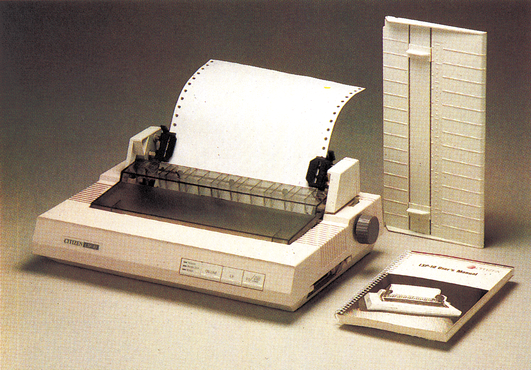
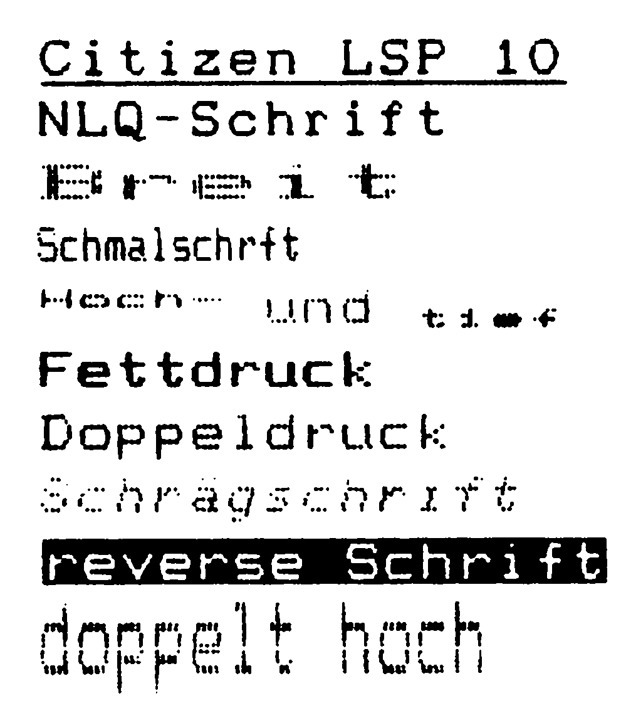

Citizen LSP 10 — Ein Drucker für alle Jahreszeiten
Mit drei Schnittstellen, einem IBM- und einem Epson-Modus gibt sich der LSP 10 flexibel. Er möchte damit ein Drucker sein, der sich den Wünschen seines Besitzers anpaßt. Kann er diesem Anspruch gerecht werden?

Obwohl es Citizen-Drucker erst seit einem knappen Jahr gibt, hat man sich im fernen Japan bereits daran gemacht, bestehende Produkte weiter zu entwickeln. Der LSP 10 (Bild 1) basiert auf dem Citizen 120 D, unserem Referenzdrucker der Preisklasse I (unter 1000 Mark), wurde aber in einigen wichtigen Details verbessert. Was das für Details sind, wollen wir nun etwas genauer betrachten.
Zunächst fällt auf, daß die Gehäuseform etwas kantiger, um nicht zu sagen schnittiger, als die des 120 D geworden ist. Damit paßt sich der LSP 10 nun auch optisch in das restliche Produktprogramm nahtlos ein, denn er ähnelt nun mehr den MSP 10- und MSP 20-Modellen. Geblieben ist der aufsetzbare Zugtraktor, bei dem leider immer ein Blatt für den Papiertransport verlorengeht. Dreht man den LSP 10 aber einmal um, so findet man einen Schlitz, über den sich das Papier nun zusätzlich auch von der Gehäuseunterseite zuführen läßt. Wer sich beim 120 D an den halbautomatischen Einzelblatteinzug gewöhnt hat, braucht auch beim LSP 10 auf diese nützliche Funktion nicht zu verzichten. Ebenfalls gleichgeblieben ist das Prinzip der einsteckbaren Schnittstellenkarten. Je nachdem, welche Karte verwendet wird, besitzt der LSP 10 eine serielle RS232-, eine Centronics- oder eine serielle IEC-Schnittstelle, wie sie der C 64 verwendet. Mit den Schnittstellenkarten wandeln sich auch die Fähigkeiten des LSP 10. Benutzt man die Commodore-Schnittstelle, so emuliert der LSP 10 einen MPS 801-Drucker, ohne dabei aber die Fähigkeiten, wie sie in der einfachen ESC/P-Norm festgelegt wurden, zu verlieren. Den umfangreichsten Befehlssatz hat man aber, wenn man die Centronics-Schnittstelle wählt.
Umfangreiche Steuer- und Grafikbefehle
In diesem Fall kann man über eine Reihe von acht DIL-Schaltern einstellen, ob der Drucker im ESC/P- oder im IBM-Modus betrieben werden soll. Im Normalfall empfiehlt es sich, die ESC/P-Einstellung zu wählen, denn dann kann man, mit einem geeigneten Interface (Test in der Ausgabe 2/86), auf umfangreiche Steuer- und Grafikbefehle zurückgreifen. Bis auf die Befehle für den Rückwärtstransport des Papiers entsprechen die Befehle damit denen eines Epson FX-85. Besonders bei der Ausstattung mit Grafikbefehlen war man bei Citizen nicht sparsam. Neben den üblichen vier Punktdichten (ESC K, ESC L, ESC Y, ESC Z) verfügt der LSP 10 über den Grafik-Master-Modus, mit dem die in der Tabelle aufgeführten zusätzlichen Punktdichten ausgewählt werden können. Auch bei den Schriftarten hält sich der LSP 10 nicht gerade zurück. Zusätzlich zu den üblichen Funktionen (breit, schmal, unterstrichen etc.) bietet er reversen und doppelt hohen Druck (Bild 2). Nicht zu vergessen ist die ordentliche NLQ-Schrift (Bild 2 und 3), mit der sich durchaus Briefe in einer ansprechenden Schrift ausdrucken lassen. Daß man dabei ein gehöriges Maß Geduld aufbringen muß, läßt sich bei einem Drucker, der im Normalmodus 120 Zeichen pro Sekunde schnell ist (gemessen 100 Zeichen/Sekunde), leider nicht vermeiden. Da bei der NLQ-Schrift immer dreimal über eine Zeile gefahren wird (zweimal mit Zeichendruck, einmal ohne Druck zurück), reduziert sich die Druckgeschwindigkeit auf 24 Zeichen pro Sekunde (gemessen 20 Zeichen/Sekunde).

Auf den ersten Blick erscheint der IBM-Modus für alle, die keinen IBM-Computer besitzen, als eine ziemlich unnötige Draufgabe. Sieht man aber einmal von der Möglichkeit ab, daß man sich einen der immer preiswerter werdenden MS-DOS-Computer zulegen möchte, so bietet dieser Modus auch für den C 64-Besitzer einige interessante Funktionen. In erster Linie sind das die nun komplett vorhandenen zwei IBM-Zeichensätze. In diesen Zeichensätzen findet man so nützliche Zeichen, wie griechische Buchstaben, Grafikzeichen (allerdings keine Commodore-Grafikzeichen), mathematische und wissenschaftliche Zeichen.
Nützlicher IBM-Modus
Da man zwischen Epson- und IBM-Modus nicht nur per DIL-Schalter, die leicht erreichbar vor der Druckwalze angebracht sind, sondern auch mit einem Software-Befehl umschalten kann, funktioniert das Ganze auch aus einem Textprogramm. Sowohl der IBM- als auch der ESC/P-Modus werden in dem 189seitigen Handbuch ausführlich und gut beschrieben. Für das Commodore-Modul ist eine zusätzliche Beschreibung erhältlich. Leider lag uns zum Testzeitpunkt nur ein englisches Handbuch vor, nach Aussage des Anbieters soll ein deutsches Handbuch in Kürze verfügbar sein.
Der LSP 10 ist eine gelungene Weiterentwicklung unseres Referenzdruckers 120 D. Leider ist er auch etwas teurer geworden, er kostet 1098 Mark. Von seinen Leistungen her ist er durchaus prädestiniert, den 120 D als Referenzdrucker abzulösen (998 Mark). Da sich der LSP 10 aber nun in die Preisklasse II (bis 1400 Mark) einordnet, muß er sich am Star NL 10 (1148 Mark) messen. Ausgiebige Vergleiche der beiden Drucker fallen aber in fast allen Punkten, vor allem beim NLQ-Schriftbild, bei der mechanischen Stabilität und beim Bedienungskomfort zugunsten des NL 10 aus. Das bedeutet jedoch nicht, daß der LSP 10 kein guter Kauf wäre, seine Leistungen können durchaus gefallen. Bleibt abzuwarten, wie die Kunden auf den Preis des LSP 10 reagieren.
(aw)Info: Weber Computertechnik, Ludmillastr. 15, 8000 München 90
| Name des Druckers: | Citizen LSP 10 | Empfohlener Preis: | 1098 Mark |
|---|---|---|---|
| Abmessungen (BxHxT): | 385 x 70 x 255 | Gewicht: | 3,7 kg |
| Papierformate: | Einzel, max. 240 mm breit Endlos, max. 240 mm breit |
Durchschläge: | bis zu 2 |
| Zeichen/Zeile: | bis zu 132 | Selbsttest: | Ja, normal + NLQ |
| Pufferspeicher: | 2 KByte | Rückwärtstransp.: | Nein |
| Geschwindigkeit Normal angegeben: NLQ angegeben: |
120 Zeichen/Sekunde 24 Zeichen/Sekunde |
Probetext: Praxistest: NLQ-Praxistest: |
1:58 Minuten 100 Zeichen/Sek. 20 Zeichen/Sekunde |
| Grafikmodi: | 480, 960, 1920, 640, 576, 720, 1152 Punkte pro Zeile | ||
| Ladbar. Zeichensatz: | Ja | Unterstreichen: | Ja |
| Hexdump: | Ja | Autom. Einzelblatt: | Ja |
| Funktionstasten: | Line Fees, On-, Offline Auto Sheed Load | ||
| Ausstattung: | Traktor, Handbuch, Papierstütze für Einzelblätter | ||
| Schriftarten: | Doppelt, Fett, Doppelt hoch, Revers, Elite, Proportional, Unterstrichen, Schrägschrift, hoch/tiefgestellt | ||
| Sonderzubehör: | — | ||